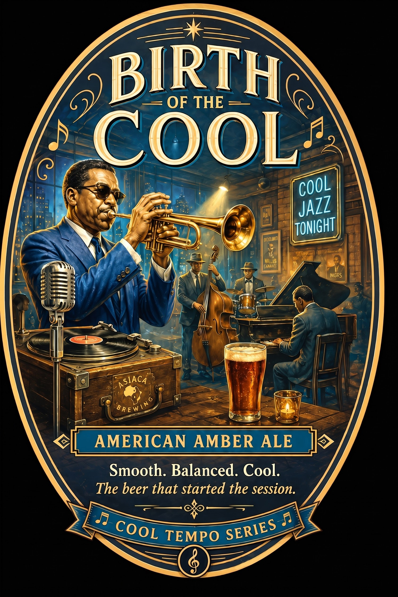
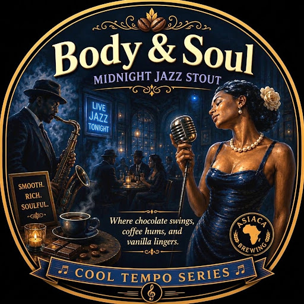
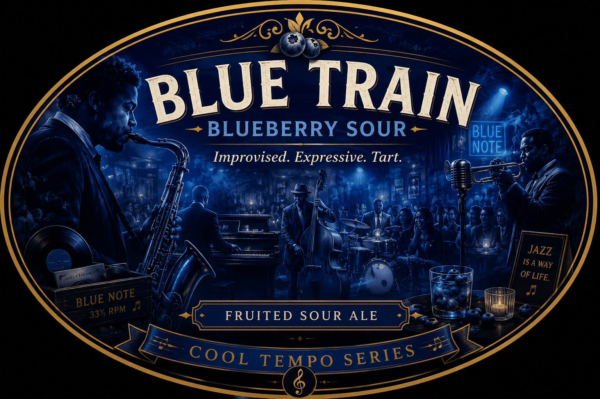
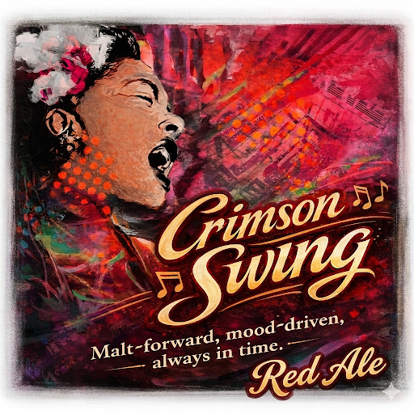
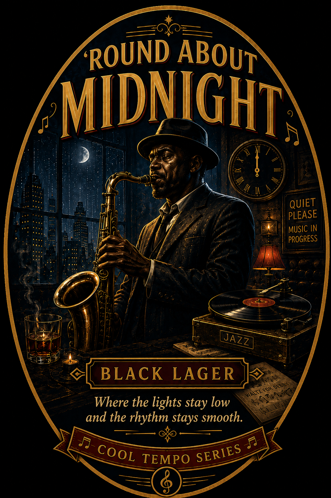
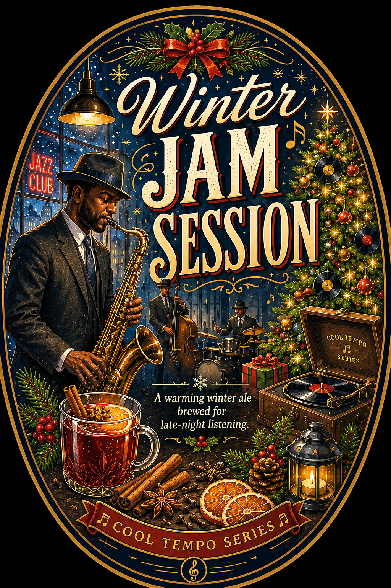
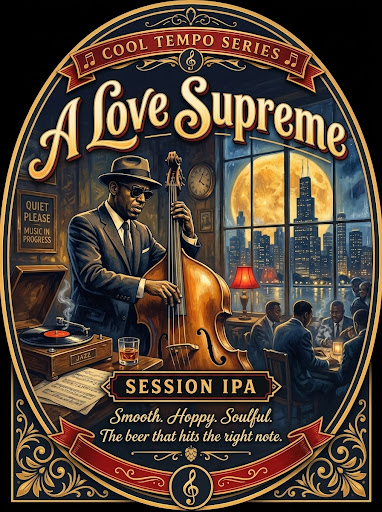

Our Story
About Asiaca Brewing
Asiaca Brewing was born in Park Ridge, Illinois, in 2022 from the passion and creativity of homebrewer Chris Baynes. What started as a hobby quickly became a mission: to craft distinctive beers that bring people together while celebrating two great American traditions—craft beer and jazz.
Inspired by the improvisation, soul, and artistry of jazz music, every Asiaca Brewing beer is designed to tell a story. Just as jazz musicians blend notes, rhythms, and emotions into something unforgettable, Asiaca Brewing combines carefully selected ingredients to create beers with depth, character, and complexity.
From rich stouts and expressive sours to smooth amber ales and bold seasonal creations, each brew offers more than flavor—it provides a glimpse into the world of jazz. The names, artwork, and recipes are all influenced by the legends, moods, and moments that have shaped the genre. These are not ordinary beers; they are liquid performances crafted to be savored one sip at a time.
At its heart, Asiaca Brewing is about sharing great beer with neighbors, friends, and fellow music lovers. Whether gathered around a backyard fire, enjoying a summer evening, or listening to a favorite record, Asiaca beers are brewed to create connection, conversation, and memorable experiences.
"So pour a glass, put on your favorite jazz record, and join the session. Welcome to Asiaca Brewing—where every beer swings to its own rhythm."
The Taplist
The Beers of Asiaca Brewing
Click any bottle label to view the full-resolution artwork.

Birth of the Cool
Amber Ale"Smooth. Balanced. Cool."
Inspired by the groundbreaking jazz movement that redefined what music could be, Birth of the Cool is the beer that started it all. This American Amber Ale strikes a harmonious balance between rich caramel malt character and a subtle hop presence.
Like a late-night jazz set that never feels rushed, every sip unfolds with layers of toasted bread, light toffee, and gentle citrus notes.

Body and Soul
Midnight Stout"A rich melody of chocolate, coffee, and vanilla."
Some songs linger long after the final note. Body and Soul is one of those beers.
This velvety stout combines roasted malt character with notes of dark chocolate, fresh coffee, and smooth vanilla. Full-bodied yet remarkably drinkable.

Blue Train
Sour Ale"Improvised. Expressive. Tart."
Just as great jazz musicians build something unforgettable from a simple melody, Blue Train transforms fresh blueberry character and bright acidity into a vibrant drinking experience.
Bursting with juicy berry aroma and a lively tart finish, this sour ale balances sweetness and acidity in perfect rhythm.

Crimson Swing
Red Ale"Malt-forward, mood-driven, always in time."
Like the driving rhythm section behind a great swing band, Crimson Swing provides the foundation that keeps everything moving.
Deep ruby in color and rich with malt complexity, this red ale showcases notes of toasted bread, light caramel, and a touch of dark fruit.

'Round About Midnight
Black Lager"Where the lights stay low and the rhythm stays smooth."
Named for one of jazz's most iconic compositions, 'Round About Midnight captures the mystery and elegance of the late-night hours.
This black lager delivers subtle roast character, hints of chocolate, and a remarkably clean finish.

Winter Jam Session
Winter Ale"A warming winter ale brewed for late-night listening."
When cold winds sweep in off Lake Michigan, Winter Jam Session brings warmth to the hearth. Brewed with sweet orange peel, holiday honey, and whole clove.
A robust malt-forward backbone that lingers long into the night.

A Love Supreme
Session IPA"Bright. Spiritual. Boldly expressive."
Named after Coltrane's transcendent 1965 masterwork. Brewed with a pillowy malt base and finished with an aromatic Citra dry-hop.
Bursts with fresh pink grapefruit, pine resin, and tropical mango notes with a light, crisp finish.
The Idea Jam Board
Have a beer style or jazz track we should brew next? Drop your concept into the queue!